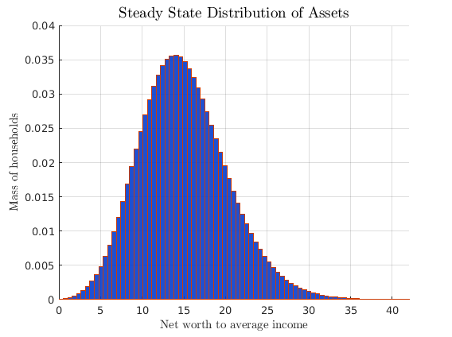
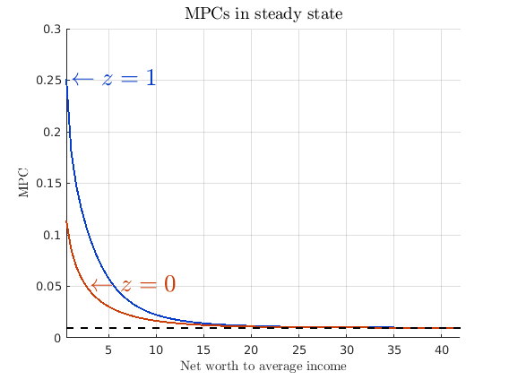
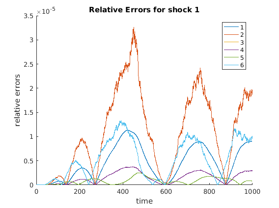
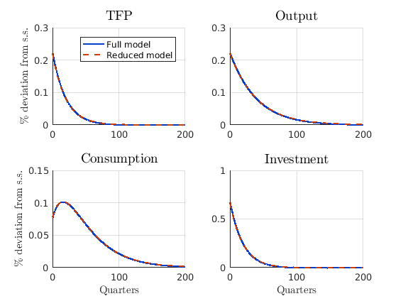
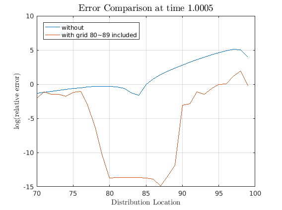
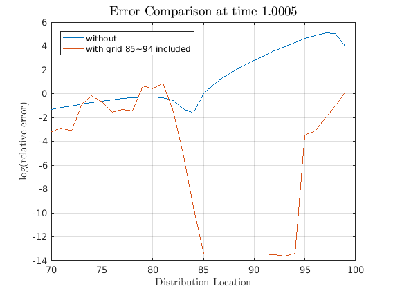

Solves the Krusell and Smith (1998)
Solving Krusell-Smith model using perturbation method involves simple 5 step process given by
- Solve for Steady State
- Linearize Model Equations
- Solve out Static Constraint (optional reduce model)
- Solve Linear System
- Compute Impulse Response Functions
- Check for Internal Consistency (if model reduction is used) where each step just requires about one function call.
In this example file, the entire problem will be solved total of 3 times. First, KS model will be solved without any model reduction. Second, KS model will be solved with model reduction, to compare how well the model reduction works. Lastly, different parts of observables will be introduced to compare how the model reduction works with different requirements. We have updates to Internal Consistency check coming in the future.
Estimated Runtime: 1.5 seconds
REFERENCES:
- Ahn, SeHyoun, Greg Kaplan, Benjamin Moll, Thomas Winberry, and Christian Wolf. " When Inequality Matters for Macro and Macro Matters for Inequality."
- Krusell, Per, and Anthony A. Smith, Jr. "Income and wealth heterogeneity in the macroeconomy." Journal of political Economy 106.5 (1998): 867-896.
REQUIRES:
- auto diff toolbox: https://github.com/sehyoun/MATLABAutoDiff
- phact toolbox: https://github.com/gregkaplan/phact
- compute_steady_state.m
- equilibrium_conditions.m
- plot_steady_state.m
- plot_IRFs.m
Contents
- Setup the toolbox
- Set options for this example run
- Step 0: Set Parameters
- Step 1: Solve for Steady State
- Step 2: Linearize Model Equations
- Step 3 (full): Solve out Static Constraints and/or Reduce Models
- Step 4: Solve Linear System
- Step 5: Simulate Impulse Response Functions
- Step 3 (reduced): Solve Out Static Constraints and/or Reduce Models
- Step 4: Solve Linear System
- Step 5: Simulate Impulse Response Functions
- Step 6: Internal Consistency Check
- (optional) Step 7: Plot relevant values
- State Space Reduction with More Observables
Setup the toolbox
Just need to include folders containing the files in the path.
addpath('/example/path/to/AutoDiff'); addpath('/example/path/to/PHACT');
Set options for this example run
example_case : 1 run full and compare with only value function reduction 2 run full and compare with only state space reduction 3 run full and compare with both reductions
example_case = 3; reduceDist_hor = 50; % m of K_m(A,b) % initialize shocks for simulation T = 200; N = 2000; vAggregateShock = zeros(1,N); vAggregateShock(1,1) = 1; %vAggregateShock = randn(1,N); % Uncomment for one realization instead % of IRFs
Step 0: Set Parameters
The script sets up parameters relevant for the model
set_parameters;
Step 1: Solve for Steady State
Non-stochastic steady state can be found using any methods. In particular, example codes can be found at http://www.princeton.edu/~moll/HACTproject.htm.
tStart = tic; fprintf('Computing steady state...\n') global IfSS IbSS I0SS varsSS A [rSS,wSS,KSS,ASS,uSS,cSS,VSS,gSS,dVUSS,dVfSS,dVbSS,IfSS,IbSS,I0SS] = ... compute_steady_state(); fprintf('Time to compute steady state: %.3g seconds\n\n\n',toc(tStart)); % Store steady state values varsSS = zeros(nVars,1); varsSS(1:2*I,1) = reshape(VSS,2*I,1); ggSS = reshape(gSS,2*I,1); varsSS(2*I+1:4*I-1,1) = ggSS(1:2*I-1); varsSS(4*I,1) = 0; varsSS(4*I+1,1) = KSS; varsSS(4*I+2,1) = rSS; varsSS(4*I+3,1) = wSS; varsSS(4*I+4,1) = (KSS ^ aalpha) * (zAvg ^ (1 - aalpha)); CSS = sum(cSS(:) .* gSS(:) * da); varsSS(4*I+5,1) = CSS; varsSS(4*I+6,1) = ddelta * KSS; % plot steady state results plot_steady_state;
Computing steady state...
Steady State Found, Interest rate =
0.0096
Time to compute steady state: 0.113 seconds
  Step 2: Linearize Model Equations
For computing derivatives, the codes written for solving for the steady-state can be used almost verbatim using automatic differentiation toolbox as long as only the functions supported by automatic differentation are used. For list of supported functions and documentation of relevant syntax check https://github.com/sehyoun/MATLABAutoDiff
fprintf('Taking derivatives of equilibrium conditions...\n') t0 = tic; % Prepare automatic differentiation vars = zeros(2*nVars+nEErrors+1,1); vars = myAD(vars); % Evaluate derivatives derivativesIntermediate = equilibrium_conditions(vars); % Extract out derivative values derivs = getderivs(derivativesIntermediate); tDerivs = toc(t0); fprintf('...Done!\n') fprintf('Time to compute derivatives: %2.4f seconds\n\n\n',tDerivs) if tDerivs > 1 warning('If you compile mex files for automatics differentiation, matrix vector multiplication will be slow'); disp('Press any key to continue...'); pause(); end % Unpackage derivatives mVarsDerivs = derivs(:,1:nVars); mVarsDotDerivs = derivs(:,nVars+1:2*nVars); mEErrorsDerivs = derivs(:,2*nVars+1:2*nVars+nEErrors); mShocksDerivs = derivs(:,2*nVars+nEErrors+1);
Taking derivatives of equilibrium conditions... ...Done! Time to compute derivatives: 0.0679 seconds
Step 3 (full): Solve out Static Constraints and/or Reduce Models
For the first run, a unreduced model will be solved
% rename derivative matrix to match notation in paper g0 = mVarsDotDerivs; g1 = -mVarsDerivs; c = sparse(nVars,1); psi = -mShocksDerivs; pi = -mEErrorsDerivs; % Solve out static constratins [~,inv_state_red,g0,g1,constant,pi,psi] = clean_G0_sparse(g0,g1,c,pi,psi);
Step 4: Solve Linear System
t0 = tic; fprintf('Solving linear system...\n') [G1,~,impact,eu] = schur_solver(g0,g1,c,psi,pi,1,1,1); fprintf('...Done!\n') fprintf('Existence and uniqueness? %2.0f and %2.0f\n',eu); fprintf('Time to solve full linear system: %2.4f seconds\n\n\n',toc(t0))
Solving linear system... ...Done! Existence and uniqueness? 1 and 1 Time to solve full linear system: 0.4475 seconds
Step 5: Simulate Impulse Response Functions
t0 = tic; [simulated,~] = simulate(G1,impact,T,N,vAggregateShock,'implicit',inv_state_red);%,4*I:4*I+6); fprintf('...Done!\n') fprintf('Time to simulate model: %2.4f seconds\n\n\n',toc(t0)) big_simul = simulated + varsSS; simulated = simulated(4*I:4*I+6,:); varsSS_small = varsSS(4*I:4*I+6,1); % Add state-states back in to get values in levels vAggregateTFP = simulated(1,:) + varsSS_small(1); vAggregateOutput = simulated(5,:) + varsSS_small(5); vAggregateConsumption = simulated(6,:) + varsSS_small(6); vAggregateInvestment = simulated(7,:) + varsSS_small(7); % Compute log differences for plotting vAggregateTFP_full = vAggregateTFP; vAggregateOutput_full = log(vAggregateOutput) - log(varsSS_small(5)); vAggregateConsumption_full = log(vAggregateConsumption) - log(varsSS_small(6)); vAggregateInvestment_full = log(vAggregateInvestment) - log(varsSS_small(7));
...Done! Time to simulate model: 0.3180 seconds
Step 3 (reduced): Solve Out Static Constraints and/or Reduce Models
% Set relevant parameters for example cases if (example_case == 1) reduceV = 1; reduceDistribution = 0; elseif (example_case == 2) reduceV = 0; reduceDistribution = 1; else reduceV = 1; reduceDistribution = 1; end % rename derivatives to match notation in paper g0 = mVarsDotDerivs; g1 = -mVarsDerivs; c = sparse(nVars,1); psi = -mShocksDerivs; pi = -mEErrorsDerivs; t0 = tic; fprintf('Model Reduction ...\n')
Model Reduction ...
State space reduction using Krylov subspace method
if reduceDistribution == 1 % State space reduction [state_red,inv_state_red,n_g_red] = krylov_reduction(g0,g1,n_v,n_g,reduceDist_hor); [g1,psi,pi,c,g0] = change_basis(state_red,inv_state_red,g1,psi,pi,c,g0); else % Clean G0 [state_red,inv_state_red,g0,g1,c,pi,psi] = clean_G0_sparse(g0,g1,c,pi,psi); n_g_red = n_g; end
Value function reduction using spline inspired bases
if reduceV == 1 % Create knot points for spline (the knot points are not uniformly spaced) knots = linspace(amin,amax,n_knots-1)'; knots = (amax-amin)/(2^c_power-1)*((knots-amin)/(amax-amin)+1).^c_power+amin-(amax-amin)/(2^c_power-1); % Function calls to create basis reduction [from_spline, to_spline] = oneDquad_spline(x,knots); [from_spline, to_spline] = extend_to_nd(from_spline,to_spline,n_prior,n_post); n_splined = size(from_spline,2); [from_spline, to_spline] = projection_for_subset(from_spline,to_spline,0,n_g_red); % Reduce the decision vector [g1,psi,~,c,g0] = change_basis(to_spline,from_spline,g1,psi,pi,c,g0); pi = to_spline * pi * from_spline(1:n_v,1:n_splined); elseif reduceV == 0 from_spline = speye(n_g_red + n_v); to_spline = speye(n_g_red + n_v); n_splined = n_v; end fprintf('...Done!\n') fprintf('Time to reduce dimensionality: %2.4f seconds\n\n\n',toc(t0))
...Done! Time to reduce dimensionality: 0.1517 seconds
Step 4: Solve Linear System
t0 = tic; fprintf('Solving reduced linear system...\n') [G1,~,impact,eu,F] = schur_solver(g0,g1,c,psi,pi,1,1,1); fprintf('...Done!\n') fprintf('Existence and uniqueness? %2.0f and %2.0f\n',eu); fprintf('Time to solve linear system: %2.4f seconds\n\n\n',toc(t0))
Solving reduced linear system... ...Done! Existence and uniqueness? 1 and 1 Time to solve linear system: 0.0199 seconds
Step 5: Simulate Impulse Response Functions
fprintf('Simulating Model...\n') t0 = tic; trans_mat = inv_state_red*from_spline; [simulated,vTime] = simulate(G1,impact,T,N,vAggregateShock,'implicit',trans_mat,4*I:4*I+6); fprintf('...Done!\n') fprintf('Time to simulate model: %2.4f seconds\n\n\n',toc(t0)) % Add state-states back in to get values in levels vAggregateTFP = simulated(1,:) + varsSS_small(1); vAggregateOuput = simulated(5,:) + varsSS_small(5); vAggregateConsumption = simulated(6,:) + varsSS_small(6); vAggregateInvestment = simulated(7,:) + varsSS_small(7); % Compute log differences for plotting vAggregateTFP_reduced = vAggregateTFP; vAggregateOutput_reduced = log(vAggregateOutput) - log(varsSS_small(5)); vAggregateConsumption_reduced = log(vAggregateConsumption) - log(varsSS_small(6)); vAggregateInvestment_reduced = log(vAggregateInvestment) - log(varsSS_small(7));
Simulating Model... ...Done! Time to simulate model: 0.0499 seconds
Step 6: Internal Consistency Check
For large problem, we are forced to take explicit update, so it can take awhile to run, but the good thing is that this only needs to be run at the end. We are currently working on this, so speed for this part might improve in the future. (For small problems, the speed is not an issue). A different consistency check is in works, and will be updated in the future.
g1 = -mVarsDerivs; psi = -mShocksDerivs; from_red = inv_state_red * from_spline; to_red = to_spline * state_red; [epsilon] = internal_consistency_check(G1,impact,n_g_red,from_red,to_red,g1,psi,F,n_v,n_g,1000,varsSS,1,0);
<internal_consistency_check>: Failed to find an approximation for the largest eigenvalue
adjusting parameter k of eigs to 10
<internal_consistency_check>: Failed to find an approximation for the largest eigenvalue
adjusting parameter k of eigs to 15
<check_internal>: Estimated simulation time is 0.057539 minutes
<internal_consistency_check>: The maximum relative error is 3.260248e-05
 (optional) Step 7: Plot relevant values
Plot impulse response functions
plot_IRFs;
State Space Reduction with More Observables
It is possible to include other variables into observables. In this part, different parts of the distribution will be included in the model reduction to show how the Krylov subspace based model reduction behaves. To that regard, the reduced model is solved while including different parts of distribution as part of the observable. In this case, a very strong requirement of knowing the probability density value at different grid points of the distribution g is taken. In the first case, 80th through 89th grid points were included in the parts that we consider to be observable. For the second example, 85th through 94th grid points were included in observable.
% rename derivative matrix to match notation in paper g0 = mVarsDotDerivs; g1 = -mVarsDerivs; c = sparse(nVars,1); psi = -mShocksDerivs; pi = -mEErrorsDerivs; % Solve full model [~,inv_state_red,g0_full,g1_full,c_full,pi_full,psi_full] = clean_G0_sparse(g0,g1,c,pi,psi); [G1,~,impact,eu] = schur_solver(g0_full,g1_full,c_full,psi_full,pi_full,1,1,1); [simulated,vTime] = simulate(G1,impact,T,N,vAggregateShock,'implicit',inv_state_red); simulated_full = simulated + varsSS; % Solve reduced without extra observables [state_red,inv_state_red,n_g_red] = krylov_reduction(g0,g1,n_v,n_g,20); [g1_red,psi_red,pi_red,c_red,g0_red] = change_basis(state_red,inv_state_red,g1,psi,pi,c,g0); [G1,~,impact,eu] = schur_solver(g0_red,g1_red,c_red,psi_red,pi_red,1,1,1); [simulated,vTime] = simulate(G1,impact,T,N,vAggregateShock,'implicit',inv_state_red); simulated_red = simulated + varsSS;
Solve reduced with extra observables for 80th through 89th grid point
[state_red,inv_state_red,n_g_red] = krylov_reduction(g0,g1,n_v,n_g,20,spdiags(ones(n_g,1),79,10,n_g)); [g1_80,psi_80,pi_80,c_80,g0_80] = change_basis(state_red,inv_state_red,g1,psi,pi,c,g0); [G1,~,impact,eu] = schur_solver(g0_80,g1_80,c_80,psi_80,pi_80,1,1,1); [simulated,vTime] = simulate(G1,impact,T,N,vAggregateShock,'implicit',inv_state_red); simulated_obs = simulated + varsSS; diff_red = (abs(simulated_red(n_v+1:end,:) - simulated_full(n_v+1:end,:)))./simulated_full(n_v+1:end,:); diff_obs80 = (abs(simulated_obs(n_v+1:end,:) - simulated_full(n_v+1:end,:)))./simulated_full(n_v+1:end,:); figure; plot(70:99,log(diff_red(70:99,11))); hold on; plot(70:99,log(diff_obs80(70:99,11))); grid on legend('Location','northwest'); legend('without','with grid 80~89 included'); title(['Error Comparison at time ',num2str(vTime(11))],'interpreter','latex','fontsize',14) ylabel('$\log$(relative error)','interpreter','latex') xlabel('Distribution Location','interpreter','latex')
Solve reduced with extra observables for 85th through 94th grid point
[state_red,inv_state_red,n_g_red] = krylov_reduction(g0,g1,n_v,n_g,20,spdiags(ones(n_g,1),84,10,n_g)); [g1,psi,pi,c,g0] = change_basis(state_red,inv_state_red,g1,psi,pi,c,g0); [G1,~,impact,eu] = schur_solver(g0,g1,c,psi,pi,1,1,1); [simulated,vTime] = simulate(G1,impact,T,N,vAggregateShock,'implicit',inv_state_red); simulated_obs = simulated + varsSS; diff_obs = (abs(simulated_obs(n_v+1:end,:) - simulated_full(n_v+1:end,:)))./simulated_full(n_v+1:end,:); figure; plot(70:99,log(diff_red(70:99,11))); hold on; plot(70:99,log(diff_obs(70:99,11))); grid on legend('Location','northwest'); legend('without','with grid 85~94 included'); title(['Error Comparison at time ',num2str(vTime(11))],'interpreter','latex','fontsize',14) ylabel('$\log$(relative error)','interpreter','latex') xlabel('Distribution Location','interpreter','latex')
Note how the errors decreases only for the parts that we required to be observable while the irrelevant parts were reduced away. This is the magic of Krylov subspace based reduction in action. Though we could solve the full model for the simple Krusell-Smith case, this ability to reduce away irrelevant part will be essential for bigger problems.
Lastly, some of the functions have lengthy parameters, you can always type "help function_name;" to see documentation. All functions contain the function call syntax as the last line, and thoese can be copied and pasted into the program file. For example, to use the internal_consistency_check function, you can call
help internal_consistency_check;
DOCSTRING TO BE UPDATED
Does an internal consistency check
by SeHyoun Ahn, March 2017
REFERENCE: <Our Paper>
PARAMETERS:
G1 = dynamics equation of the reduced model (usually output of
schur_solver)
impact = matrix of shock to variables (usually an output of
schur_solver)
n_g_red = number of state variables in the reduced model
from_red = inverse projection matrix from the reduced basis
to_red = projection matrix to the reduced basis
g1 = dynamics equation for the full model
psi = impact of shocks on state variables
F = matrix transform to get stable parts of v (usually output of
schur_solver)
n_v = number of choice variables in full model
n_g = number of state variables in full model
T = time period to check consistency with
steadystate = steady-state values of each variables
plotting = 1 to make diagnostic plots
IRF = 1 if compute consistency check for one a period shock
0 if compute simulated process
dt = (optional) if a good guess of dt is available the step to
estimate time-step can be bypassed
OUTPUTS:
epsilon = relative errors for internal consistency check
(check paper in reference for details)
EXAMPLES:
This file requires very specific examples. See the example given in
<examples/KrusellSmith/mainfile.m> example (provided from github at
<<https://github.com/gregpkaplan/phact>>
SYNTAX (you can copy and paste the following) :
[epsilon] = internal_consistency_check(G1,impact,n_g_red,from_red,to_red,g1,psi,F,n_v,n_g,T,steadystate,plotting,IRF,dt)
and just copy the lastline of the documentation string. Alternately, you can call "doc function_name" to read the doc string in the MATLAB help browser, and "edit function_name" to see the function codes.